1 Regression and Classification Trees
1.1 Introduction
Decision trees can be used for continuous outcomes - regression trees - or categorical ones - classification trees. Classification and regression trees are sometimes referred as CART.
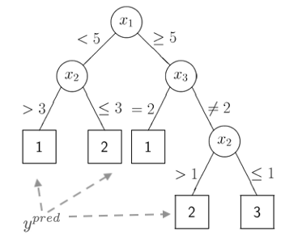
The figure above represents a classification tree with several branches that partition the predictors space into disjoint regions according to some loss function. The predicted value for the outcome is found at the end of the branches.
For regression trees, and similarly to the linear model, the predicted value will correspond to the mean of the region created by the partition. For a classification tree, the prediction will correspond to a category of the outcome.
In regression trees, a common loss function used to generate the partition is:
\(\sum_{i \in R_1} (y_i - \bar{y}_{R_1})^2 + \sum_{i \in R_2} (y_i - \bar{y}_{R_2})^2\)
where \(\bar{y}_{R_1}\) and \(\bar{y}_{R_2}\) are the means of the outcome for the regions created by splitting the region defined by a predictor into 2 parts.
The animation below shows different splits of the predictor and the correspondent prediction (mean of \(y\)) - the two horizontal lines represent to the mean of the outcome in the two regions. The change in the loss function is computed in the top left corner:
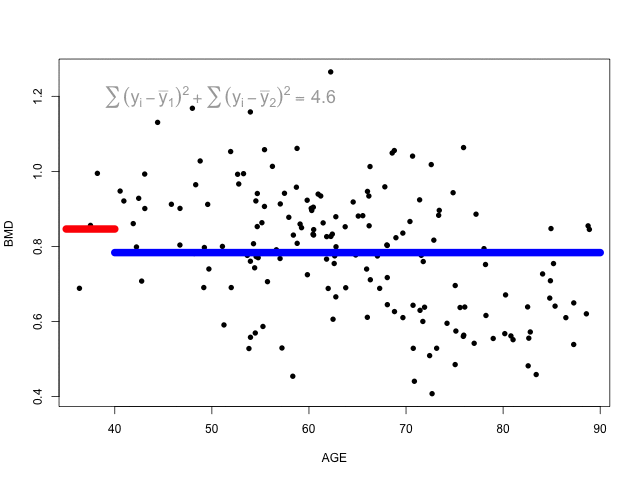
At each step, the predictor and respective cutoff that minimise the loss function is selected to split the branch.
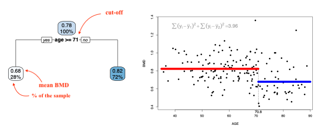
We can keep dividing the branches until each region has 1 data point (there can be more if there are ties). This of course will result in the tree overfitting the data. We would prefer a smaller tree that would result in a lower MSE. Cutting the branches of the tree to reduce its complexity and potentially leading to an improvement in the MSE is called pruning.
Once again we will use the idea of penalisation to balance complexity and fitting.
\[ \sum_{m=1}^{|T|} \sum_{x_i \in R_m} (y_i - \bar{y}_{R_m})^2 + \alpha |T|, \\ |T| \text{ is the number of nodes in the tree} \]
The penalisation (tuning) parameter, \(\alpha\), controls the amount of pruning and it can be chosen by cross-validation.
Classification trees follow a similar logic but the outcome is categorical. We will have to consider a different loss function. Two common loss functions used in classification trees are:
Gini index: \(1-\sum_{k=1}^K{p_k^2}\)
- Favours larger partitions.
- Perfectly classified, Gini Index would be zero.
- Evenly distributed would be 1 – (1/# Classes).
Information gain (entropy): \(\sum_{k=1}^K{-p_k\log_2 p_k}\)
- Favours splits with small counts but many unique values
- Weights probability of class by log2 of the class probability
- Information Gain is the entropy of the parent node minus the entropy of the child nodes.
1.2 Readings
Read the following chapters of An introduction to statistical learning:
- 8.1 The Basics of Decisions Trees
- An Introduction to Recursive Partitioning Using the RPART Routines - extra notes
1.3 Practice session
Task 1 - Grow a complete regression tree
Using the BMD.csv dataset,
Using the bmd.csv, fit a tree to predict bone mineral density (BMD) based on AGE
library(rpart) #library for CART
library(rpart.plot)
#read the dataset
bmd.data <-
read.csv("https://www.dropbox.com/s/c6mhgatkotuze8o/bmd.csv?dl=1",
stringsAsFactors = TRUE)The package rpart implements the classification and regression trees and the
rpart.plot contains the tree plotting function. We will use the rpart()
function to fit the tree, with some options to grow the complete tree
library(caret)
t1 <- rpart(bmd ~ age,
data = bmd.data,
method = "anova", #indicates the outcome is continuous
control = rpart.control(
minsplit = 1, # min number of observ for a split
minbucket = 1, # min nr of obs in terminal nodes
cp=0) #decrease in complex for a split
)
#the rpart.plot() may take a long time to plot
#the complete tree
#if you cannot run it, just try plot(t1); text(t1, pretty=1)
#and you will see just the structure of the tree
rpart.plot(t1) ## Warning: labs do not fit even at cex 0.15, there may be some overplotting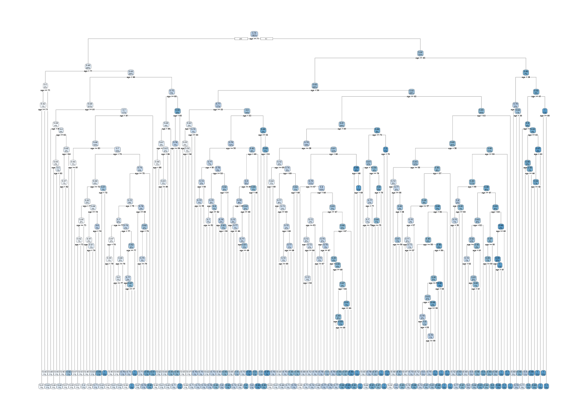
We can now prune the tree using a limit for the complexity parameter \(cp\). This will indicate that only a split with CP higher than the limit is worth it.
##
## Regression tree:
## rpart(formula = bmd ~ age, data = bmd.data, method = "anova",
## control = rpart.control(minsplit = 1, minbucket = 1, cp = 0))
##
## Variables actually used in tree construction:
## [1] age
##
## Root node error: 4.659/169 = 0.027568
##
## n= 169
##
## CP nsplit rel error xerror xstd
## 1 1.5011e-01 0 1.0000e+00 1.01765 0.11147
## 2 2.2857e-02 1 8.4989e-01 0.89504 0.11530
## 3 2.1625e-02 2 8.2703e-01 1.18928 0.15101
## 4 2.0621e-02 8 6.9728e-01 1.21668 0.15171
## 5 1.7896e-02 11 6.2374e-01 1.29781 0.16189
## 6 1.6691e-02 13 5.8795e-01 1.29128 0.16179
## 7 1.3855e-02 14 5.7126e-01 1.27044 0.15896
## 8 1.2133e-02 15 5.5740e-01 1.28841 0.15934
## 9 1.1410e-02 16 5.4527e-01 1.35628 0.16661
## 10 1.0975e-02 17 5.3386e-01 1.40868 0.17009
## 11 1.0843e-02 21 4.8996e-01 1.40868 0.17009
## 12 1.0550e-02 26 4.3574e-01 1.42386 0.17023
## 13 1.0318e-02 27 4.2519e-01 1.39577 0.16607
## 14 9.5921e-03 28 4.1488e-01 1.43436 0.17090
## 15 9.5636e-03 29 4.0528e-01 1.43302 0.17121
## 16 9.4801e-03 35 3.4511e-01 1.43302 0.17121
## 17 8.8498e-03 37 3.2615e-01 1.45697 0.17171
## 18 8.7833e-03 38 3.1730e-01 1.46385 0.17148
## 19 8.6510e-03 39 3.0851e-01 1.46385 0.17148
## 20 8.1753e-03 42 2.8164e-01 1.51318 0.17653
## 21 8.1257e-03 43 2.7347e-01 1.50180 0.17666
## 22 7.9341e-03 45 2.5722e-01 1.49873 0.17666
## 23 6.8660e-03 46 2.4928e-01 1.48046 0.17148
## 24 6.2708e-03 47 2.4242e-01 1.52337 0.17402
## 25 5.9903e-03 52 2.1106e-01 1.51988 0.16810
## 26 5.9250e-03 54 1.9908e-01 1.53343 0.16805
## 27 5.9229e-03 56 1.8723e-01 1.53729 0.16825
## 28 5.8272e-03 57 1.8131e-01 1.53729 0.16825
## 29 5.4523e-03 58 1.7548e-01 1.54174 0.16837
## 30 5.0336e-03 59 1.7003e-01 1.57444 0.16855
## 31 4.9113e-03 60 1.6500e-01 1.57002 0.16862
## 32 4.6286e-03 63 1.5026e-01 1.56988 0.17224
## 33 4.5364e-03 64 1.4563e-01 1.62250 0.17986
## 34 4.3127e-03 66 1.3656e-01 1.62250 0.17986
## 35 4.3104e-03 68 1.2794e-01 1.62250 0.17986
## 36 4.2807e-03 69 1.2363e-01 1.62704 0.17972
## 37 3.9800e-03 71 1.1506e-01 1.60725 0.17771
## 38 3.6958e-03 72 1.1108e-01 1.62131 0.17727
## 39 3.1052e-03 75 9.9997e-02 1.61935 0.17755
## 40 3.0222e-03 76 9.6892e-02 1.62050 0.17739
## 41 2.7468e-03 78 9.0848e-02 1.61019 0.17499
## 42 2.6775e-03 79 8.8101e-02 1.61092 0.17494
## 43 2.5828e-03 81 8.2746e-02 1.62495 0.17811
## 44 2.5347e-03 82 8.0163e-02 1.62522 0.17810
## 45 2.4665e-03 83 7.7628e-02 1.60648 0.17644
## 46 2.4609e-03 84 7.5162e-02 1.61453 0.17668
## 47 2.4243e-03 86 7.0240e-02 1.61426 0.17669
## 48 2.4140e-03 87 6.7816e-02 1.61381 0.17671
## 49 2.3335e-03 88 6.5402e-02 1.61381 0.17671
## 50 2.3321e-03 89 6.3068e-02 1.62015 0.17692
## 51 2.2471e-03 91 5.8404e-02 1.62341 0.17707
## 52 2.1072e-03 92 5.6157e-02 1.62288 0.17563
## 53 2.0870e-03 93 5.4050e-02 1.64493 0.17924
## 54 2.0451e-03 100 3.7574e-02 1.64696 0.17917
## 55 1.9386e-03 101 3.5529e-02 1.64164 0.17923
## 56 1.8005e-03 102 3.3590e-02 1.64927 0.17891
## 57 1.3686e-03 103 3.1790e-02 1.65874 0.17933
## 58 1.3438e-03 107 2.6306e-02 1.66822 0.17937
## 59 1.2138e-03 108 2.4962e-02 1.66544 0.17949
## 60 1.1334e-03 110 2.2535e-02 1.65286 0.17945
## 61 1.0723e-03 111 2.1401e-02 1.66121 0.17957
## 62 1.0605e-03 113 1.9257e-02 1.66661 0.17950
## 63 1.0035e-03 114 1.8196e-02 1.67577 0.18096
## 64 9.4464e-04 115 1.7193e-02 1.68613 0.18094
## 65 7.5924e-04 116 1.6248e-02 1.69531 0.18176
## 66 7.5061e-04 118 1.4730e-02 1.70108 0.18176
## 67 7.4468e-04 119 1.3979e-02 1.70117 0.18175
## 68 7.3755e-04 120 1.3234e-02 1.70117 0.18175
## 69 7.1811e-04 121 1.2497e-02 1.70013 0.18179
## 70 7.1728e-04 122 1.1779e-02 1.70013 0.18179
## 71 7.1635e-04 123 1.1061e-02 1.70013 0.18179
## 72 7.1110e-04 124 1.0345e-02 1.70013 0.18179
## 73 6.6133e-04 125 9.6340e-03 1.70245 0.18178
## 74 6.5629e-04 126 8.9727e-03 1.69886 0.18200
## 75 6.5461e-04 127 8.3164e-03 1.69886 0.18200
## 76 5.8428e-04 128 7.6618e-03 1.71271 0.18347
## 77 5.1243e-04 129 7.0775e-03 1.71597 0.18319
## 78 4.7746e-04 130 6.5651e-03 1.71423 0.18334
## 79 4.7460e-04 131 6.0876e-03 1.71405 0.18335
## 80 4.5064e-04 132 5.6130e-03 1.71288 0.18339
## 81 4.3443e-04 133 5.1624e-03 1.71219 0.18323
## 82 4.0723e-04 134 4.7279e-03 1.71290 0.18328
## 83 4.0723e-04 135 4.3207e-03 1.71573 0.18329
## 84 4.0195e-04 136 3.9135e-03 1.71573 0.18329
## 85 3.6728e-04 137 3.5115e-03 1.71298 0.18333
## 86 3.3896e-04 138 3.1442e-03 1.71664 0.18344
## 87 3.1877e-04 139 2.8053e-03 1.71664 0.18344
## 88 3.1811e-04 140 2.4865e-03 1.71680 0.18344
## 89 2.7369e-04 141 2.1684e-03 1.71482 0.18318
## 90 2.0990e-04 142 1.8947e-03 1.71456 0.18320
## 91 1.8394e-04 143 1.6848e-03 1.71441 0.18311
## 92 1.8306e-04 144 1.5008e-03 1.71669 0.18317
## 93 1.8237e-04 145 1.3178e-03 1.71669 0.18317
## 94 1.3863e-04 146 1.1354e-03 1.71682 0.18316
## 95 1.1758e-04 148 8.5816e-04 1.71809 0.18298
## 96 9.2318e-05 149 7.4058e-04 1.71952 0.18324
## 97 9.1614e-05 150 6.4826e-04 1.71872 0.18323
## 98 8.9016e-05 152 4.6503e-04 1.71872 0.18323
## 99 8.1752e-05 153 3.7601e-04 1.71872 0.18323
## 100 5.6280e-05 154 2.9426e-04 1.71817 0.18325
## 101 5.0071e-05 155 2.3798e-04 1.72019 0.18319
## 102 4.1650e-05 156 1.8791e-04 1.71880 0.18322
## 103 2.7818e-05 157 1.4626e-04 1.71833 0.18317
## 104 2.2876e-05 158 1.1844e-04 1.71756 0.18313
## 105 1.7583e-05 159 9.5567e-05 1.71683 0.18313
## 106 1.5454e-05 160 7.7983e-05 1.71756 0.18315
## 107 1.3947e-05 161 6.2529e-05 1.71734 0.18318
## 108 1.3462e-05 162 4.8582e-05 1.71734 0.18318
## 109 1.2059e-05 163 3.5120e-05 1.71677 0.18317
## 110 1.2058e-05 164 2.3061e-05 1.71677 0.18317
## 111 6.8126e-06 165 1.1003e-05 1.71677 0.18317
## 112 2.4728e-06 166 4.1899e-06 1.71691 0.18318
## 113 1.7171e-06 167 1.7171e-06 1.71682 0.18318
## 114 0.0000e+00 168 0.0000e+00 1.71656 0.18312##
## Regression tree:
## rpart(formula = bmd ~ age, data = bmd.data, method = "anova",
## control = rpart.control(minsplit = 1, minbucket = 1, cp = 0))
##
## Variables actually used in tree construction:
## [1] age
##
## Root node error: 4.659/169 = 0.027568
##
## n= 169
##
## CP nsplit rel error xerror xstd
## 1 0.150111 0 1.00000 1.01765 0.11147
## 2 0.022857 1 0.84989 0.89504 0.11530
## 3 0.021625 2 0.82703 1.18928 0.15101
## 4 0.020621 8 0.69728 1.21668 0.15171
## 5 0.020000 11 0.62374 1.29781 0.16189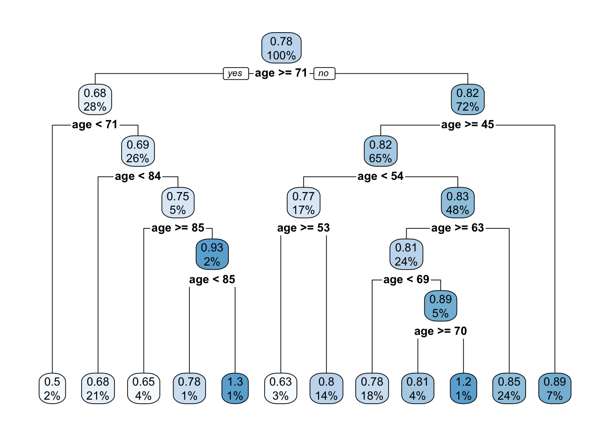
TRY IT YOURSELF:
- Get a tree for the problem above but with the defaults of
rpart.control().
See the solution code
?rpart.control #see the defaults
t1.default <- rpart(bmd ~ age,
data = bmd.data,
method = "anova")
rpart.plot(t1.default)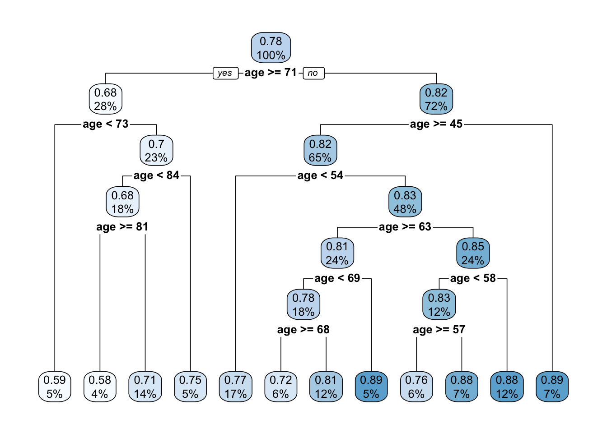
- Use the
caretpackage to fit theprune.t1tree
See the solution code
trctrl <- trainControl(method = "cv", number = 10)
#to get the same tree we will fix the tuning parameter cp
#to be 0.02
t1.caret <- train(bmd ~ age,
data = bmd.data,
method = "rpart",
trControl=trctrl,
control = rpart.control(minsplit = 1,
minbucket = 1,
cp=0.02),
tuneGrid = expand.grid(cp=0.02))
rpart.plot(t1.caret$finalModel)
Task 2 - Make predictions from a tree
Let’s use the pruned tree from task 1 (pruned.t1) to predict the BMD for an
individual 70 years old and compare it with the predictions from a linear
model
lm1 <- lm(bmd ~ age,
data = bmd.data)
predict(prune.t1, #prediction using the tree
newdata = data.frame(age=70))
predict(lm1, #prediction using the linear model
newdata = data.frame(age=70))We now want to plot the predictions from the tree for ages 40 through 90 together with the predictions from the linear model
pred.tree <- predict(prune.t1,
newdata = data.frame(age=seq(40,90,1)))
pred.lm <-predict(lm1,
newdata = data.frame(age=seq(40,90,1)))
plot(seq(40,90,1), pred.tree ,
type = "l", col="blue",
xlab="age", ylab="bmd")
lines(seq(40,90,1), pred.lm, col="red")
legend(45, 1.2, lty=c(1,1),
c("tree", "linear model"),
col=c("blue","red"))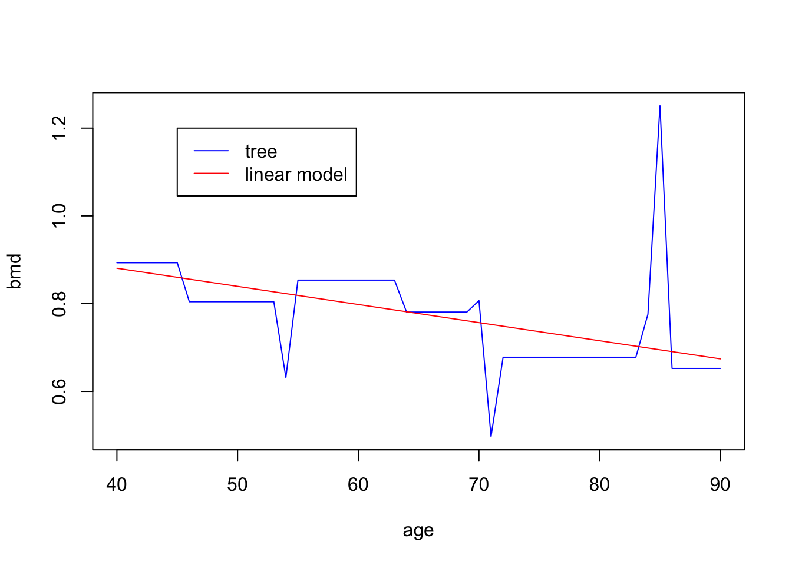
Task 3 - Fit a tree using Cross-validation
Let’s fit now a tree to predict bone mineral density (BMD) based on AGE, SEX and BMI (BMI has to be computed) and compute the MSE.
We will use the caret package with method="rpart". Notice that the
caret will prune the tree based on the cross-validated cp.
#compute BMI
bmd.data$bmi <- bmd.data$weight_kg / (bmd.data$height_cm/100)^2
trctrl <- trainControl(method = "repeatedcv", number = 10, repeats = 10)
t2.caret <- train(bmd ~ age + sex + bmi,
data = bmd.data,
method = "rpart",
trControl=trctrl,
tuneGrid = expand.grid(cp=seq(0.001, 0.1, 0.001))
)
#Plot the RMSE versus the CP
plot(t2.caret)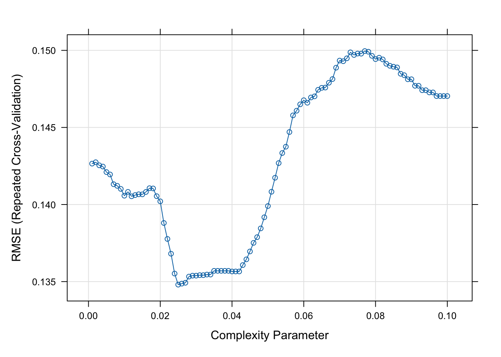
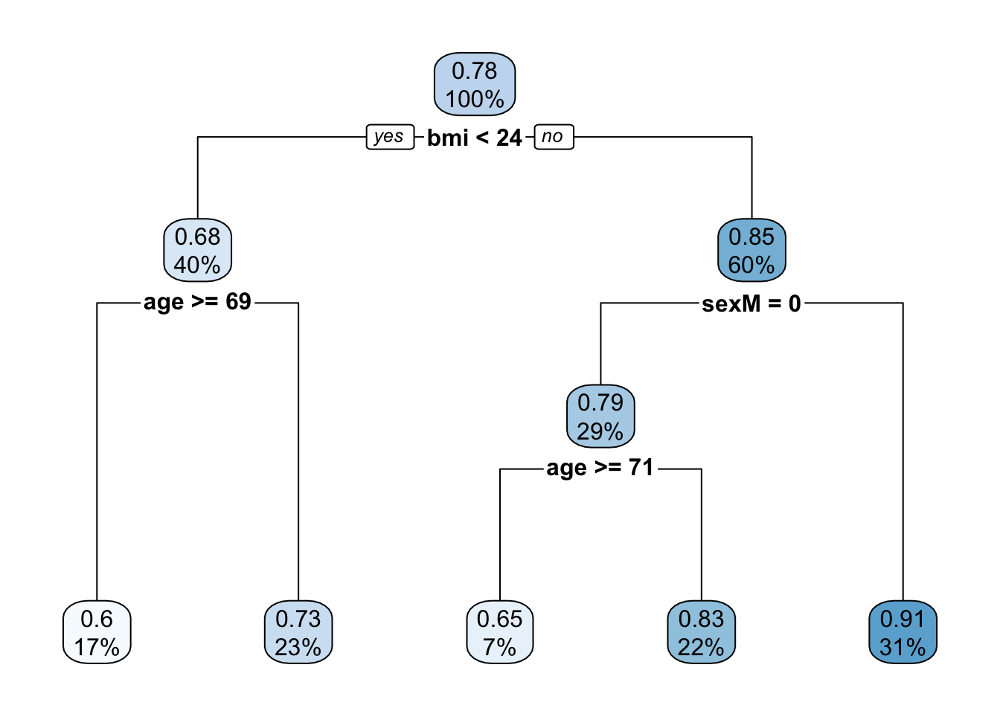
## CP nsplit rel error
## 1 0.26960125 0 1.0000000
## 2 0.07577601 1 0.7303988
## 3 0.06448418 2 0.6546227
## 4 0.05400352 3 0.5901386
## 5 0.02500000 4 0.5361350We can compare the RMSE and R2 of the tree above with the linear model
trctrl <- trainControl(method = "repeatedcv", number = 5, repeats = 10)
lm2.caret<- train(bmd ~ age + sex + bmi,
data = bmd.data,
method = "lm",
trControl=trctrl
)
lm2.caret$results## intercept RMSE Rsquared MAE RMSESD RsquaredSD MAESD
## 1 TRUE 0.1383368 0.3292804 0.1046154 0.01878148 0.1145405 0.01176567#extracts the row with the RMSE and R2 from the table of results
#corresponding to the cp with lowest RMSE (best tune)
t2.caret$results[t2.caret$results$cp==t2.caret$bestTune[1,1], ]## cp RMSE Rsquared MAE RMSESD RsquaredSD MAESD
## 25 0.025 0.134802 0.3819951 0.104164 0.02665188 0.1769088 0.01977811Task 4 - Fit a classification tree
The SBI.csv dataset contains the information of more than 2300 children that attended the emergency services with fever and were tested for serious bacterial infection. The variable sbi has 4 categories: Not Applicable(no infection) / UTI / Pneum / Bact
Create a new variable sbi.bin that identifies if a child was diagnosed or not with serious bacterial infection.
set.seed(1999)
sbi.data <- read.csv("https://www.dropbox.com/s/wg32uj43fsy9yvd/SBI.csv?dl=1")
summary(sbi.data)## X id fever_hours age sex wcc prevAB
## Min. : 1.0 Min. : 495 Min. : 0.00 Min. :0.010 Length :2348 Min. : 0.2368 Length :2348
## 1st Qu.: 587.8 1st Qu.:133039 1st Qu.: 24.00 1st Qu.:0.760 N.unique : 2 1st Qu.: 7.9000 N.unique : 2
## Median :1174.5 Median :160016 Median : 48.00 Median :1.525 N.blank : 0 Median :11.6000 N.blank : 0
## Mean :1174.5 Mean :153698 Mean : 80.06 Mean :1.836 Min.nchar: 1 Mean :12.6431 Min.nchar: 2
## 3rd Qu.:1761.2 3rd Qu.:196030 3rd Qu.: 78.00 3rd Qu.:2.752 Max.nchar: 1 3rd Qu.:16.1000 Max.nchar: 3
## Max. :2348.0 Max. :229986 Max. :3360.00 Max. :4.990 Max. :58.7000
## sbi pct crp
## Length :2348 Min. :8.647e-03 Min. : 0.00
## N.unique : 4 1st Qu.:1.600e-01 1st Qu.: 11.83
## N.blank : 0 Median :7.600e-01 Median : 30.97
## Min.nchar: 3 Mean :3.744e+00 Mean : 48.41
## Max.nchar: 13 3rd Qu.:4.620e+00 3rd Qu.: 66.20
## Max. :1.565e+02 Max. :429.90# Create a binary variable based on "sbi"
sbi.data$sbi.bin <- as.factor(ifelse(sbi.data$sbi == "NotApplicable", "NOSBI", "SBI"))
table(sbi.data$sbi, sbi.data$sbi.bin)##
## NOSBI SBI
## Bact 0 34
## NotApplicable 1752 0
## Pneu 0 251
## UTI 0 311Now, build a classification tree to predict if a child has serious bacterial infection using fever_hours, wcc, age, prevAB, pct, and crp
sbi.tree <- rpart(sbi.bin ~ fever_hours+age+sex+wcc+prevAB+pct+crp,
data = sbi.data,
method = "class"
)
plotcp(sbi.tree)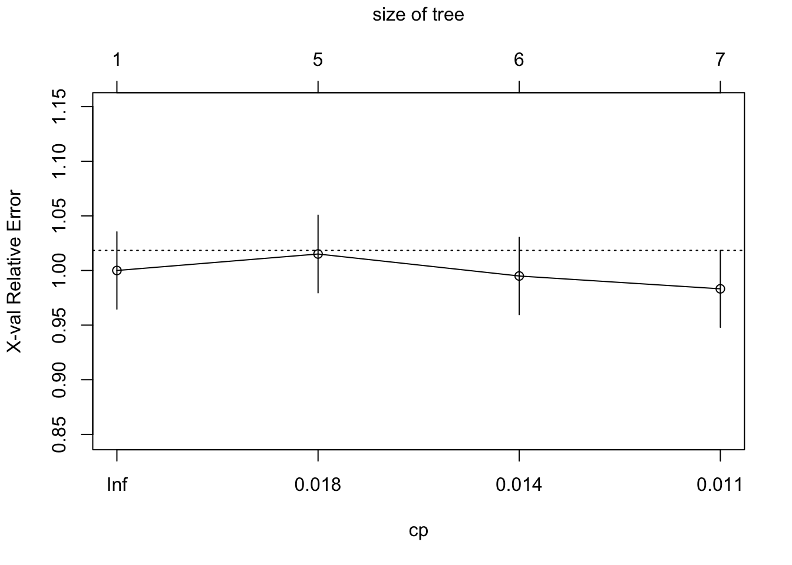
Looking at the error associated with different values of CP using the default
options, it is not
clear that we have the range that gives us the lowest error. We will use
part.control to extend the tree and then prune it.
sbi.tree <- rpart(sbi.bin ~ fever_hours+age+sex+wcc+prevAB+pct+crp,
data = sbi.data,
method = "class",
control = rpart.control(
minsplit = 5, # min number of observ for a split
minbucket = 5, # min nr of obs in terminal nodes
cp=0.001)
)
plotcp(sbi.tree)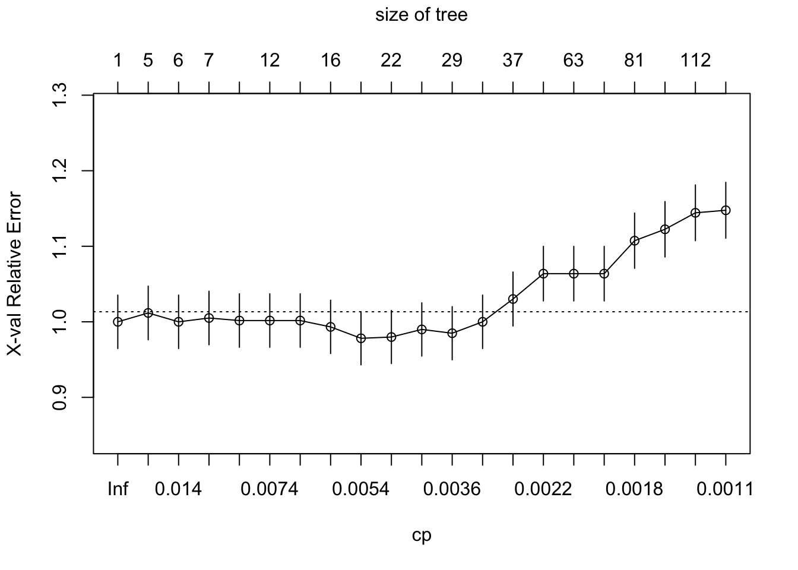
##
## Classification tree:
## rpart(formula = sbi.bin ~ fever_hours + age + sex + wcc + prevAB +
## pct + crp, data = sbi.data, method = "class", control = rpart.control(minsplit = 5,
## minbucket = 5, cp = 0.001))
##
## Variables actually used in tree construction:
## [1] age crp fever_hours pct prevAB sex wcc
##
## Root node error: 596/2348 = 0.25383
##
## n= 2348
##
## CP nsplit rel error xerror xstd
## 1 0.0201342 0 1.00000 1.00000 0.035383
## 2 0.0167785 4 0.91611 1.01174 0.035519
## 3 0.0117450 5 0.89933 1.00000 0.035383
## 4 0.0083893 6 0.88758 1.00503 0.035442
## 5 0.0075503 9 0.86242 1.00168 0.035403
## 6 0.0072707 11 0.84732 1.00168 0.035403
## 7 0.0067114 14 0.82550 1.00168 0.035403
## 8 0.0058725 15 0.81879 0.99329 0.035304
## 9 0.0050336 19 0.79530 0.97819 0.035125
## 10 0.0041946 21 0.78523 0.97987 0.035145
## 11 0.0039150 25 0.76846 0.98993 0.035265
## 12 0.0033557 28 0.75671 0.98490 0.035205
## 13 0.0025168 34 0.73490 1.00000 0.035383
## 14 0.0022371 36 0.72987 1.03020 0.035728
## 15 0.0020973 39 0.72315 1.06376 0.036096
## 16 0.0020134 62 0.66946 1.06376 0.036096
## 17 0.0018876 67 0.65940 1.06376 0.036096
## 18 0.0016779 80 0.62919 1.10738 0.036548
## 19 0.0013982 97 0.60067 1.12248 0.036698
## 20 0.0011186 111 0.58054 1.14430 0.036909
## 21 0.0010000 114 0.57718 1.14765 0.036941If you have the same set.seed(1999) you should get cp = 0.0050336 as the
one with lowest error. We can now prune the tree accordingly.
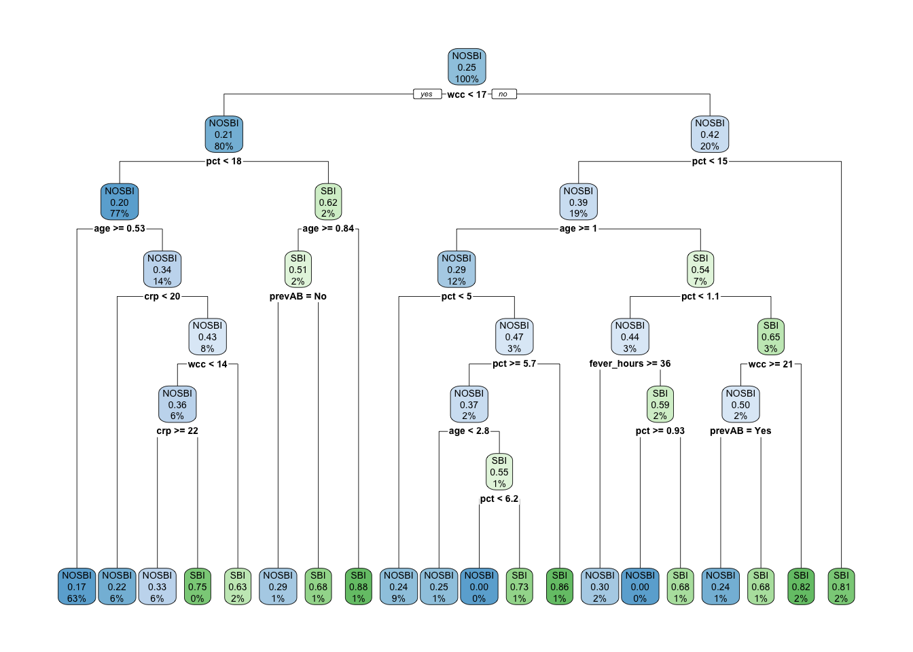
TRY IT YOURSELF:
- Use the
caretpackage to fit the tree above.
See the solution code
trctrl <- trainControl(method = "repeatedcv",
number = 5,
repeats = 10,
classProbs = TRUE,
summaryFunction = twoClassSummary)
tree.sbi <- train(sbi.bin ~ fever_hours+age+sex+wcc+prevAB+pct+crp,
data = sbi.data,
method = "rpart",
trControl = trctrl,
tuneGrid=expand.grid(cp=seq(.001, .1, .001)))## Warning in train.default(x, y, weights = w, ...): The metric "Accuracy" was not in the result set. ROC will be used
## instead.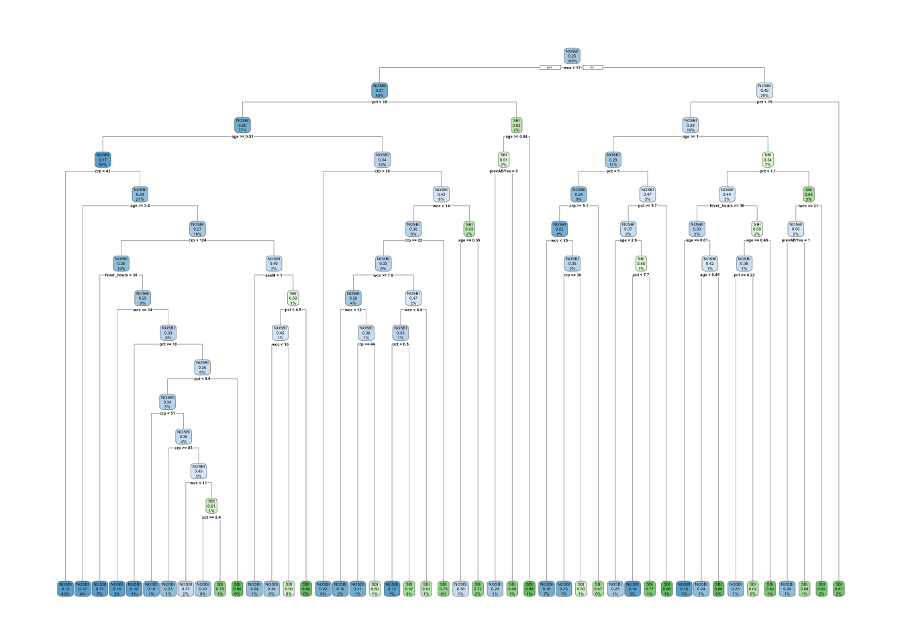
- Compare the confusion matrix of the trees fitted with
rpart()function and thecaretpackage.
1.4 Exercises
Solve the following exercises:
- The dataset SA_heart.csv contains on coronary heart disease status (variable chd) and several risk factors including the cumulative tobacco consumption tobacco, systolic sbp, and age
Fit a classification tree for chd using tobacco,sbp and age
Find the AUC ROC and confusion matrix for the tree
What is the predicted probability of coronary heart disease for someone with no tobacco consumption, sbp=132 and 45 years old?
- The dataset fev.csv contains the measurements of forced expiratory volume (FEV) tests, evaluating the pulmonary capacity in 654 children and young adults.
Fit a regression tree to predict fev using age, height and sex.
Compare the MSE of the tree with a GAM model for fev with sex and smoothing splines for height and age.